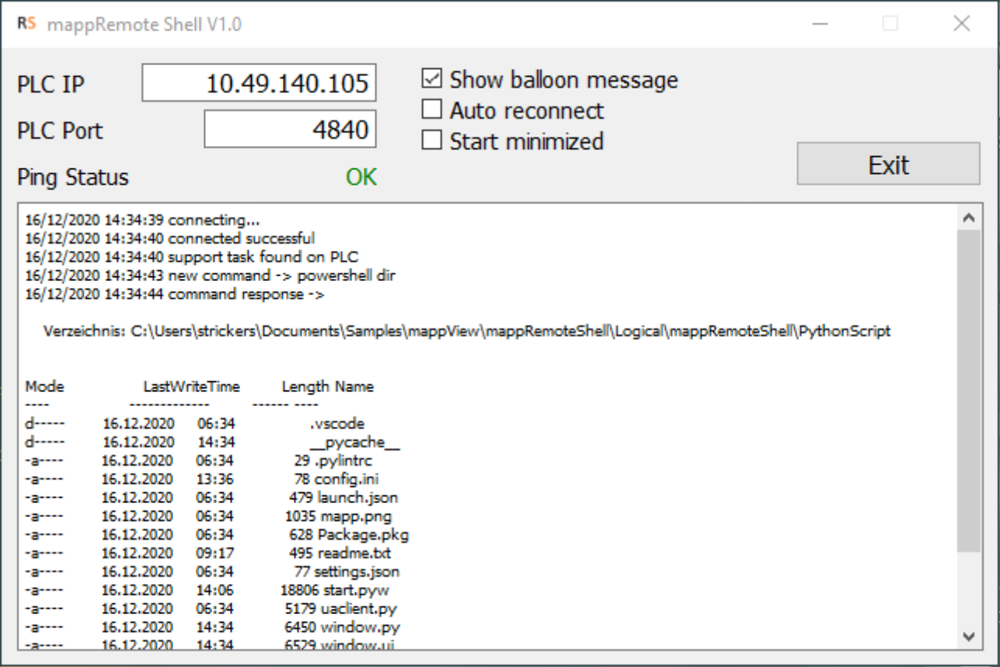
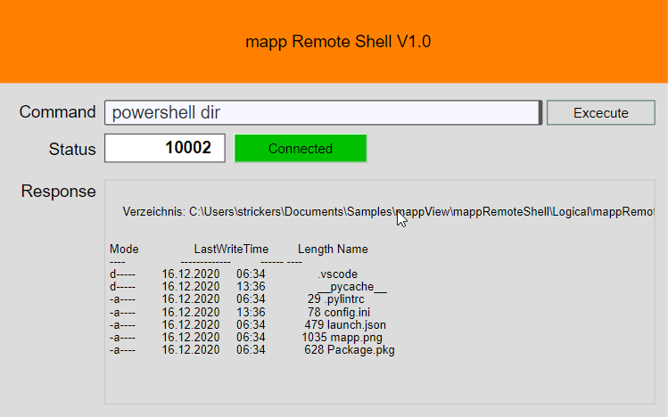

Start
Introduction
This is a sample project to execute a shell command on a remote PC. The remote command is executed with a Python script that connects via OPC UA to the B&R PLC. The PLC only needs the variable structure to execute a command and some code to indicate the connection status. The sample uses a mappView visualization for demo purpose but mappView is not required to run the sample.
The variable structure mappRemoteShell has the following members:
| Variable | Description |
|---|---|
| execute | Starts the remote command. The Python script resets this variable when the command is finished. |
| command | The shell command string that is excecuted on the remote PC |
| alive_counter | This counter is used to detect the connection state |
| connected | Indicates that the remote PC is connected and ready to receive a command |
| status | The status of the command |
The following status codes show the state of the command
| Code | Description |
|---|---|
| 65535 | The command is still busy |
| 10000 | Generic command error |
| 10001 | The command was not found |
| 10002 | The response data is larger than the response string on the PLC |
| 0 | The command was successful |
|
 Python Script |
 PLC UI |
The Python script can run on any system that supports the Python framework. The logger gives a detailed feedback about the connection status and executed command. The option for balloon messages will show a notification every time a command is executed. Auto reconnect will automatically connect when the script is started or when the connection was interrupted. Start minimized will put the application into the system tray on startup. If the command produces response data the script will transfer this data back to PLC. If the command generates an error the error message will be sent back as response to the PLC.
Requirements
- Automation Studio 4.7
- Automation Runtime C4.72
- Python 3.8 or higher
Recommended task class is #8 with a 10ms cycle time.